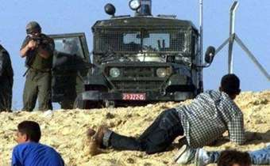
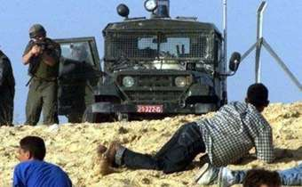

This PoOr Security Box Has BeEn DefAcEd
By:
B_Real
and Brake^Off from World Fantabulous Defacers
Global Awareness Means Peace
Los sueños abren
camino a la realidad y esa realidad debe superar esos sueños
Este deface esta dedicado a todas las personas que luchan en la guerra, en Palestina, porqué es bastante difícil vivir ahí, si no chequen esto:
Mueren personas inocentes en cada guerra, en esta foto vemos como un bebé fue muerto por soldados israelitas

En esta foto vemos como un niño de tan solo 13 años trata de defender a su localidad de los soldados israelitas, crees que si el tanque le dispara una bala, el niño se va a poder defender??
 

Soldados israelitas disparan indiscriminadamente a lo que ven en Palestina, en contra de personas indefensas, tanques contra niños.... También la armada israelita dispara en contra de ambulancias.
W F D
B_Real Shoutz to:
Brake^Off Shoutz to: Extra
Shoutz to 
Miles de personas provenientes de la Universidad de Berkeley en Cali
fornia protestan que es lo que pasó con el criminal Benjamin Netanyahu
Ex-Primer ministro de lo criminal en Israel (saludos a ellos)
Supuesto Pacifista??... No lo kreo...
¿¿Creen que esto es vivir??
ISRAELÍES Y PALESTINOS AL BORDE DE UNA "GUERRA LIMITADA"
Tras la muerte de dos colonos judíos en atentado y el bombardeo israelí en la franja de Gaza, israelíes y palestinos se acercan a una "guerra limitada".
Por: Raquel Ortega
Fuente: EFE | 08:36 Hrs
Jerusalén.- Israelíes y palestinos -siete de los cuales murieron hoy- están al borde de una "guerra limitada" a la que no se le ve salida, tras la muerte de dos colonos judíos en un atentado y el posterior bombardeo israelí de la franja de Gaza, donde al igual que en Cisjordania continúan los choques armados.
Dos de los palestinos murieron hoy como consecuencia de las heridas graves que les causó el bombardeo masivo israelí de Gaza el lunes, y los otros cinco en enfrentamientos con soldados israelíes: cuatro en ese territorio y el quinto en el distrito cisjordano de Jenín.
El bombardeo israelí -dirigido en particular a objetivos civiles y militares de la Autoridad Nacional Palestina (ANP), que preside Yaser Arafat- fue lanzado diez horas después del atentado que cometieron palestinos ayer junto al asentamiento de Kfar Darom, enla franja de Gaza, en el que murieron dos colonos judíos.
"Esto no es un 'picnic', dijo el primer ministro israelí, Ehud Barak, tras el bombardeo que lanzaron helicópteros y embarcaciones de guerra de su país contra la franja de Gaza, y esta vez tuvo razón: se trata de una guerra", indica hoy el conocido columnista Najum Barnea, del diario independiente israelí "Yediot Ajronot".
En un sentido similar se manifiesta, también hoy, el prestigioso columnista Zeev Schiff, del diario independiente "Haaretz", de Tel Aviv, el cual se refiere a que "Israel dio ayer un paso en dirección a una guerra limitada contra la ANP. Y dio ese paso en dirección a una "guerra limitada" al bombardear por aire y mar objetivos de la ANP e infraestructuras de sus organismos de seguridad a lo largo de toda la franja de Gaza.
Pese a ello, el Gobierno israelí sigue diciendo que quiere reanudar las negociaciones con los palestinos a condición de que éstos pongan fin a la violencia.
El bombardeo del lunes de Gaza fue el más duro, apunta el también restigioso columnista Jemi Shalev, del diario independiente israelí "Maariv", quien añade que "no menos duro que el atentado palestino" en ese mismo territorio- en los enfrentamientos hasta ahora registrados.
En la reunión del Gabinete reducido de Israel para Asuntos de Seguridad, que aprobó el bombardeo, el ministro de Transporte y de Turismo, el ex comandante del Ejército israelí Amnon Lipkin-Shájak -que se abstuvo-, dijo que esa operación hará entrar a su país en una guerra limitada.
Si la actual 'intifada' (levantamiento popular) palestina comenzó con duros enfrentamientos y se deslizó a choques armados, ahora se encuentra al borde de una guerra limitada, con todas las consecuencias militares y legales, en opinión de los observadores.
Los choques armados entre palestinos y soldados israelíes continuaron durante esta mañana tras una larga noche de enfrentamientos, sobre todo en la zona de los asentamientos judíos de la franja de Gaza, pero también en numerosos puntos de Cisjordania.
Fuentes militares israelíes declararon que uno de los muertos junto al asentamiento judío de Kfar Darom, en la franja de Gaza, era un policía palestino que había disparado contra los soldados de Israel.
Sobre la actual situación, el secretario de la ANP, Taeb Abdel Rahmán, manifestó a primeras horas de esta tarde que "la Policía palestina intervendrá a partir de ahora cada vez que el Ejército israelí dispare a manifestantes" de su pueblo. Abdel Rahmán afirmó que "Israel ha matado al proceso de paz", por lo que "a partir de este momento, si continúa la violencia, los palestinos se defenderán a sí mismos".
También el presidente del Parlamento palestino, Ahmed Qurea ("Abu Alá") consideró "clínicamente muerto el proceso de paz". Por su parte, Arafat pidió a Estados Unidos -el principal aliado de Israel en el mundo- que intervenga "para poner fin a los ataques israelíes".
-------> tomado de: http://www.terra.com.mx/noticias/nota/20001121/110996.htm
are
|^CyBeRpUnK^|, Alhdeath, hid30us, Psycho-Penguin, Sir0kill, b1n4ry c0d3,
brake^off, DELAY, YZT, |^«pp_LuiGui»^|, yzt, Skiller,
Module, m0r0n, Nightman and Me
Iskra, Ador, Dftkey, *kArLa*, Chino Moreno, Neon Lenz, SBarahaz,
Porto_7, B0OB, JJMonte, Barko, datagram, Federico, Spone, Klazer,
Mers, Spike, Pubik, Spawn and ER'z and NCA graffitiz guyz
DjvenoM,Ariot,MiBXXX,PARAN0IA,Techno... Y a la demás banda...
www.hackernews.com www.attrition.org www.alldas.de
STOP
KILLING INOCENT PEOPLE
Admin
Gracias por darme este espacio, aunque sea por un momento, pero ojalá
y podamos llegar a comprender y ser razonables acerca de la guerra.
Mándame un mail para poder ayudarte y arreglar tu servidor... Gracias :-)
kamaleon_korn@antionline.com
Si alguien quiere ayudar y contribuir con esta causa contáctenos
Nada
dañado administrador, solo borré mis logs por seguridad propia, y renombrado ... index.html -------> indexold.html